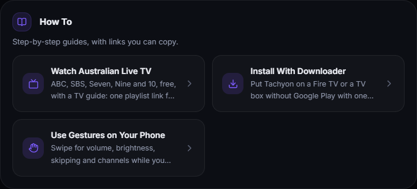
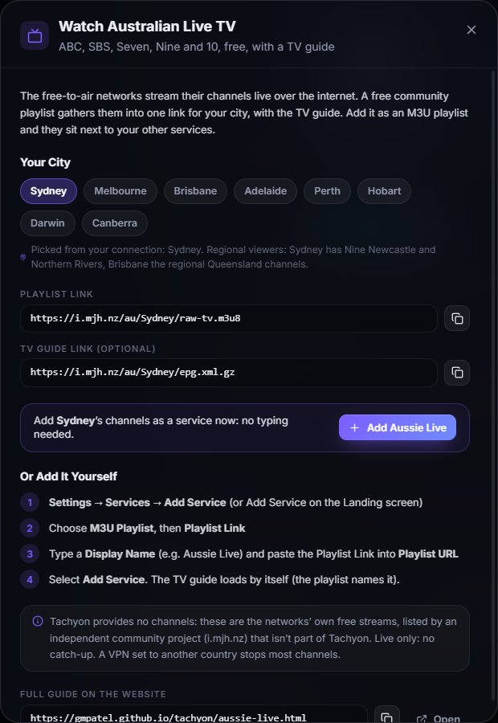

Watch Australian Live TV in Tachyon
Australia's free-to-air networks (ABC, SBS, Seven, Nine and 10) stream their channels live over the internet, free. A community-made playlist gathers them into one link for your city, with a TV guide. Add that link to Tachyon once and the channels sit next to your other services, with the guide, favorites and channel zapping.
It takes about a minute. There's no account to make and nothing to pay.
What You Need
- Tachyon on your phone, tablet, TV box or computer.
- An Australian internet connection. The networks only stream inside Australia, so most channels won't play overseas.
The Quick Way: Add It in the App
Tachyon 1.1.2 and newer can add the channels for you, with no links to copy or type. This is the easiest way on a TV.
- Open Settings → About. On a phone, the menu at the top left has About Tachyon.
- Under How To, select Watch Australian Live TV.
- Check the city. Tachyon picks it from your internet connection; select another one if it isn't your nearest.
- Select Add Aussie Live.
That's it. The channels load in a few seconds and the TV guide follows. The same popup also has both links for your city, each with a copy button, and the steps to add them yourself.


On an older Tachyon, update it first (Google Play updates itself; a Downloader code installs the newest), or add the playlist yourself with the steps below.
Your City's Links
Pick your nearest capital city. You get its local versions of Seven, Nine, 10 and ABC, plus all the national channels.
| City | Playlist Link | TV Guide Link |
|---|---|---|
| Sydney | https://i.mjh.nz/au/Sydney/raw-tv.m3u8 | https://i.mjh.nz/au/Sydney/epg.xml.gz |
| Melbourne | https://i.mjh.nz/au/Melbourne/raw-tv.m3u8 | https://i.mjh.nz/au/Melbourne/epg.xml.gz |
| Brisbane | https://i.mjh.nz/au/Brisbane/raw-tv.m3u8 | https://i.mjh.nz/au/Brisbane/epg.xml.gz |
| Adelaide | https://i.mjh.nz/au/Adelaide/raw-tv.m3u8 | https://i.mjh.nz/au/Adelaide/epg.xml.gz |
| Perth | https://i.mjh.nz/au/Perth/raw-tv.m3u8 | https://i.mjh.nz/au/Perth/epg.xml.gz |
| Hobart | https://i.mjh.nz/au/Hobart/raw-tv.m3u8 | https://i.mjh.nz/au/Hobart/epg.xml.gz |
| Darwin | https://i.mjh.nz/au/Darwin/raw-tv.m3u8 | https://i.mjh.nz/au/Darwin/epg.xml.gz |
| Canberra | https://i.mjh.nz/au/Canberra/raw-tv.m3u8 | https://i.mjh.nz/au/Canberra/epg.xml.gz |
Live in a regional area? Sydney also has Nine Newcastle and Nine Northern Rivers. Brisbane also has the regional Queensland versions of Seven (Cairns, Mackay, Rockhampton, Sunshine Coast, Toowoomba, Townsville, Wide Bay) and Nine Gold Coast.
You only need the Playlist Link. The playlist names its own TV guide, so Tachyon loads the guide by itself. The TV Guide Link is there in case you ever want to add it by hand.
Add It on a Phone or Tablet
- Open Add Service: on the Landing screen, or in Settings → Services (on a phone, the menu at the top left has Manage Services).
- Choose M3U Playlist.
- In Display Name, type a name, for example
Aussie Live. - Choose Playlist Link (not Panel Login).
- Paste your city's link into Playlist URL, for example
https://i.mjh.nz/au/Sydney/raw-tv.m3u8. - Optional: select Test Connection to check the link.
- Select Add Service.
The channels load in a few seconds and the TV guide follows shortly after. Open Live TV to start watching.
Tip: copy the link on this page and paste it, rather than typing it. Long press the Playlist URL box to paste.
Add It on a TV
The steps are the same as on a phone. With a TV remote, typing a long link is slow, so here are two easier ways:
- Use your phone as the keyboard. On Google TV and Android TV, the Google TV app on your phone has a remote with a keyboard button; on Fire TV, the Fire TV app does the same. Select the Playlist URL box on the TV, then type or paste the link on your phone.
- Plug in a keyboard. A USB or Bluetooth keyboard works in every Tachyon text box.
On the TV, select a box and press OK to start typing in it.
Add It on a Computer
On Windows, macOS or Linux, go to Settings → Services → Add Service and follow the same steps as on a phone.
What You Get
About 170 channels, depending on your city:
- Your city's free-to-air channels: ABC TV, Seven, 7two, 7mate, 7flix, Channel 9, 9Gem, 9Go!, 9Life, 9Rush, 10, 10 Drama, 10 Comedy and Nickelodeon, plus local extras such as Channel 31 (Melbourne), Channel 44 (Adelaide) and First Nations TV (Darwin).
- National channels: ABC Kids / ABC Family, ABC Entertains, ABC NEWS, SBS, SBS2, SBS Food, NITV and SBS World Movies.
- 24/7 channels from Seven, Nine and 10, each playing one show or theme all day, such as Bondi Rescue, Border Security and Home and Away Classics.
- World news: Al Jazeera, DW English, CNA and Red Bull TV.
- Radio: SBS's radio stations.
In Live TV, the channels are in three categories: your city's name (the local free-to-air channels), Au (the national and 24/7 channels) and World.
Tips
- Favorites: add the channels you watch most to Favorites, so they're one tap away.
- Zapping: in the player, up / down on a TV remote changes channel; on a phone, swipe to browse the channels without leaving the player.
- Ad breaks are the networks' own and play as they would on their apps.
- No catch-up: these are live streams only, so Start Over and catch-up aren't available.
- Moved city? Edit the service and change the city name in the Playlist URL, or add a second service for another city.
- Use it with your other services: pick All Services on the Landing screen to see these channels merged with the rest of your TV.
If Something Doesn't Work
- A channel won't play. Check you're on an Australian internet connection: a VPN set to another country stops most channels. Some channels also go dark online for a while, for example during sport the network can't stream online. Try again later.
- The TV guide is empty. Give it a minute after adding the service. If it stays empty, edit the service, open More Options and check Use the Playlist's Guides is on. You can also paste your city's TV Guide Link into the TV Guide section there (Add Guide on a computer, Guide Link (XMLTV) on a phone or TV).
- A channel is missing or the list looks out of date. Select Refresh Library to load the newest list.
- Nothing loads at all. Check the Playlist URL has no spaces or missing letters. Copying and pasting it from this page is the safest way.
Good to Know
Tachyon is a media player only and provides no channels. These streams come from the networks' own free streaming services. The playlist is made by an independent community project (i.mjh.nz) that isn't part of Tachyon or the networks, and its links can change without notice. If they do, this page will be updated.